| Órgano o estructura celular | DESCRIPCION | FUNCIONES | IMAGEN | |
|---|---|---|---|---|
| NÚCLEO CELULAR Contiene: | Orgánulo cubierto por una doble membrana celular (envoltura nuclear). La envoltura nuclear contiene poros que la atraviesan, siendo puertas selectivas de comunicación entre el interior del núcleo y el citoplasma. Por debajo de la envoltura nuclear se encuentra la lámina nuclear compuesta de filamentos intermedios (ver citoesqueleto). | Contiene la Información genética y controla toda la actividad de la célula. | 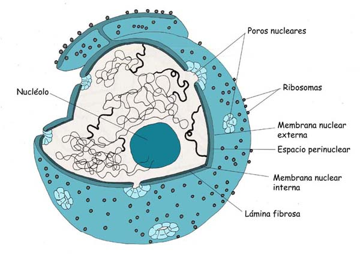 | |
| Núcleolo | Orgánulo esferoidal, refringente y compuesto de proteínas y ARN, que se encuentra en el interior del núcleo. Un núcleo puede contener uno o varios nucléolos. | Interviene en la formación de los ribosomas. | 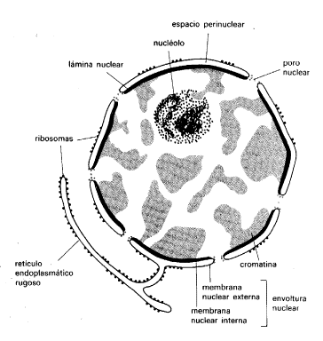 | |
| Cromosomas | Estructuras formadas por ADN y proteínas que en células eucariotas son lineales. El número y forma de los cromosomas es específico de cada especie de ser vivo. El hombre tiene 23 pares de cromosomas. | Los cromosomas contienen los genes responsables de la información genética. | 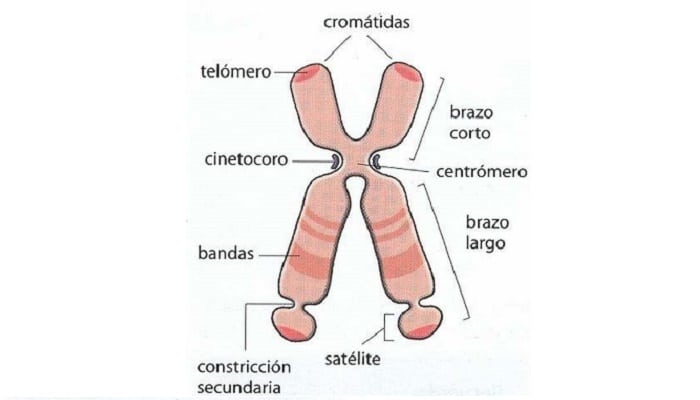 | |
| CITOPLASMA | Parte de la célula que rodea el núcleo y que está limitada por la membrana exterior. | Contiene los orgánulos citoplasmáticos | ||
| Membrana plasmática | Bicapa lipídica que delimita la célula. Contiene también proteínas y oligosacáridos, constituyendo la disposición de estas moléculas una estructura en mosaico fluido. Es el modelo básico presente en todas las membranas celulares. Los oligosacáridos se encuentran en la cara externa de la membrana. Las proteínas pueden ser transmembrana o periféricas. | Encierra el contenido celular
|
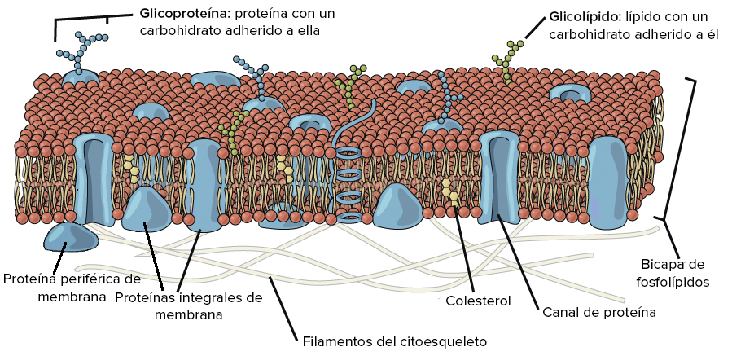 | |
| Ribosomas | Son complejos macromoleculares de proteínas y ácido ribonucleico (ARN) que se encuentran en el citoplasma, en las mitocondrias, en el retículo endoplasmático y en los cloroplastos. | Intervienen en la síntesis de proteínas | 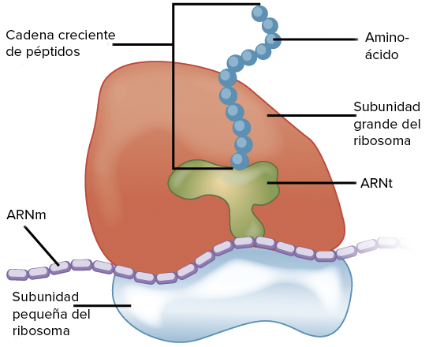 | |
| Retículo endoplasmático rugoso | Está formado por una serie de canales o cisternas membranosas que se encuentran distribuidos por todo el citoplasma de la célula. Son sacos aplanados. Presentan ribosomas adheridos a su membrana. | Se encarga de la síntesis y transporte de proteínas de secreción o de membrana. | 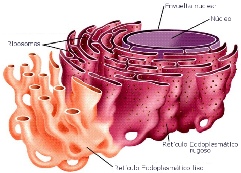 | |
| Retículo endoplasmático liso | Es un entramado de túbulos membranosos interconectados entre sí y que se continúan con las cisternas del retículo endoplasmático rugoso. | Participa en el transporte celular, en la síntesis de lípidos, en la detoxificación, en la glucogenolisis y actúa como reservorio de calcio. | ||
| Aparato de Golgi | Orgánulo formado por membranas distribuidas en dictiosomas que están formados por 40 o 60 sáculos (cisternas) aplanados y rodeados de membrana que se encuentran apilados unos encima de otros. | Funciona como una planta empaquetadora, modificando vesículas que le llegan del retículo endoplasmático haciendo la glicosilación de proteínas y lípidos | 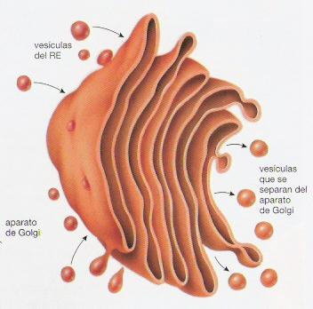 | |
| Vacuolas | Las vacuolas son compartimentos cerrados o limitados por la membrana plasmática. Presentes en todas las células de plantas. También aparece en algunas células procariotas y eucariotas. | Contienen diferentes fluidos, como agua o enzimas, aunque en algunos casos puede contener sólidos, por ejemplo azúcares, sales, proteínas y otros nutrientes | 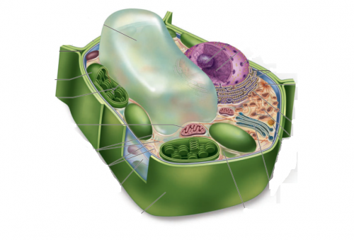 | |
| Lisosomas | Son estructuras esféricas rodeadas por una membrana con unas características especiales y que encierra a enzimas capaces de lisar las moléculas orgánicas. | Se encargan de la digestión celular. Contienen enzimas hidrolíticas y proteolíticas que sirven para digerir los materiales de origen externo (heterofagia) o interno (autofagia) que llegan a ellos. | 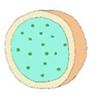 | |
| Peroxisomas | Son vesículas que contienen enzimas oxidasas y catalasas. | Intervienen en el metabolismo lipídico y contienen enzimas que oxidan los aminoácidos. Participan también en la detoxificación. Generan agua oxigenada. | 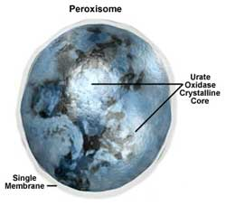 | |
| Mitocondrias | Están rodeadas de dos membranas claramente diferentes en sus funciones, que delimitan dos espacios en el interior del orgánulo: el espacio intermembranoso y la matriz mitocondrial. La membrana externa lisa y permeable a iones y metabolitos. La membrana interna altamente selectiva y replegada en las crestas mitocondriales. La matriz contiene ADN circular y ribosomas mitocondriales. |
La principal función es la respiración celular que consiste en la oxidación de metabolitos mediante el ciclo de Krebs y la beta-oxidación de ácidos grasos. En este proceso se obtiene ATP mediante la fosforilación oxidativa que es dependiente de la cadena transportadora de electrones. | 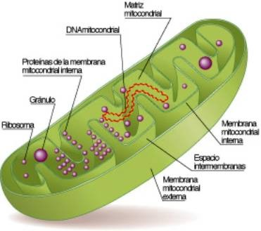 | |
| Plastos | Son orgánulos con doble membrana y un espacio intermembranoso entre ellas, son propios de las plantas y algas. En el espacio interno (estroma) pueden contener otras membranas (tilacoides). Presentan ADN circular y ribosomas (plastoribosomas). |
hay diferentes tipos: Leucoplastos: Son incoloros y se localizan en las células vegetales de órganos no expuestos a la luz, tales como raíces, tubérculos, semillas y órganos que almacenan almidón. Cromoplastos: Sintetizan y almacenan pigmentos. Su presencia en las plantas determina el color rojo, anaranjado o amarillo de algunas frutas, hortalizas y flores. Cloroplastos: Realizan la fotosíntesis. En los tilacoides se encuentran organizados los pigmentos y demás moléculas que convierten la energía lumínica en energía química. |
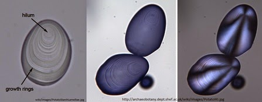 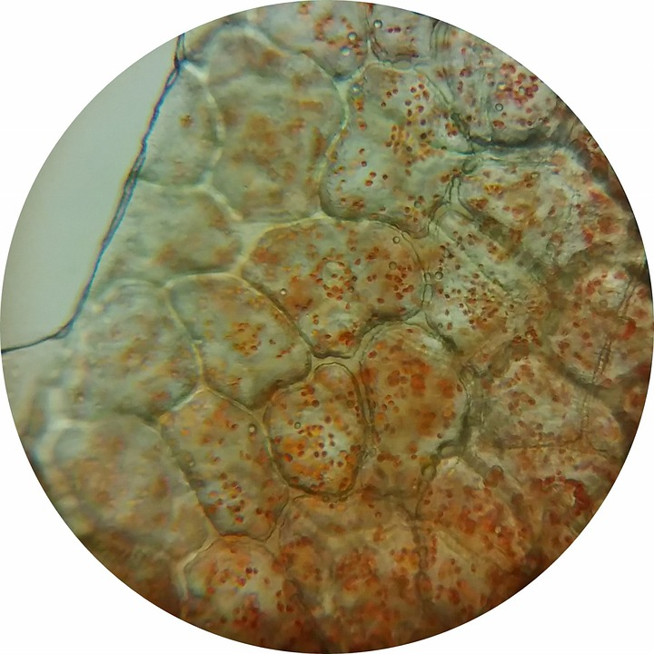 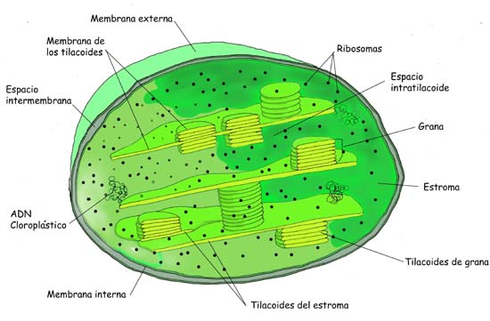 | |
| Citoesqueleto Tres tipos de filamentos: |
Conjunto de filamentos proteicos que forman un entramado dinámico y se extienden a través del citoplasma, aunque también los hay intranucleares. | Las funciones del citoesqueteto son diversas interviene en la organización celular, en la movilidad, en la división de la célula, etc. | ||
| Filamentos de actina | Constituidos por una proteína globular, la actina que forma una hélice. Se encuentran fundamentalmente debajo de la membrana plasmática. |
Mantiene la forma de la célula, forma pseudópodos, interviene en la división de las células animales (citocinesis) y en la contracción muscular. | 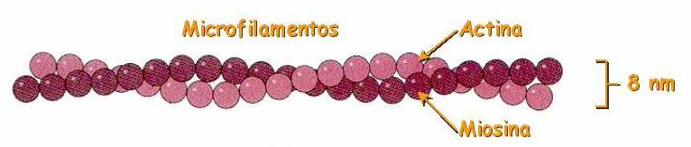 | |
| Microtúbulos | Estructuras tubulares constituidos por las proteínas globulares tubulinas α y β.Se extienden por el citoplasma. | Intervienen en el movimiento de los orgánulos celulares, forman el huso acromático durante la división celular y constituyen la estructura de otros orgánulos. | 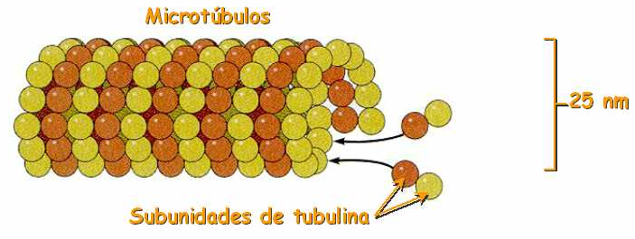 | |
| Filamentos intermedios | Filamentos de proteínas fibrosas diferentes según el tipo de tejido en el que se encuentren. | Son cuerdas moleculares que organizan la estructura interna de la célula y participan también en las uniones entre células. | 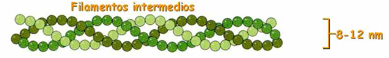 | |
| Centriolo | También llamados cuerpos basales son estructura cilíndrica, constituido por 9 tripletes de microtúbulos. Los extremos del cilindro son diferentes (estructuras polarizadas). | Están ausentes en la mayoría de las plantas. Forman el centrosoma, y son parte de los cilios y los flagelos. | 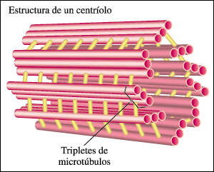 | |
| Centrosoma | Formado por un par de centriolos dispuestos perpendicularmente y por una nube de moléculas alrededor llamada material pericentriolar. | Intervienen como centro organizador de microtúbulos citoplasmáticos y en la división de las células animales. | 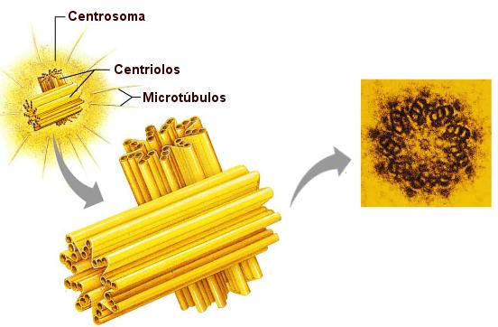 | |
| Cilios y flagelos | Son expansiones celulares filiformes en la superficie de numerosas células. Los cilios son más cortos y numerosos que los flagelos. Ambos están formados internamente por microtúbulos y rodeados de membrana plasmática. |
Producen el desplazamiento de la célula en los organismos unicelulares y el movimiento del medio externo en los pluricelulares. | 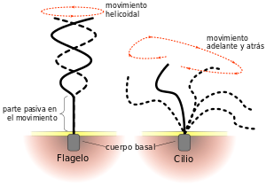 | |
| Pared celular | Es una estructura rígida y estable, que rodea a las células vegetales compuesta fundamentalmente por el polisacárido celulosa y otras moléculas como la lignina o la pectina. Puede ser de diferentes grosores. Presente en las células vegetales y fúngicas. | Protege a la célula y delimita su tamaño. Controla los procesos de transporte y ayuda con su rigidez a que la planta crezca erguida. | 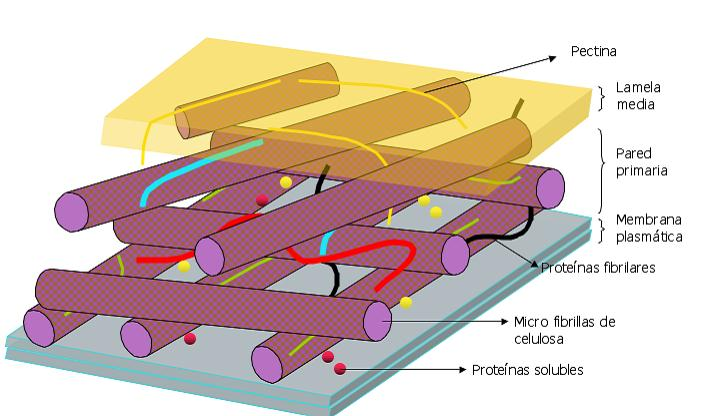 | |
| Matriz extracelular | Es un entramado de moléculas, proteínas y carbohidratos que se disponen en el espacio intercelular y que es sintetizado y secretado por las propias células. Presente solo en organismos pluricelulares |
Mantiene a las células unidas, permite la comunicación celular. | 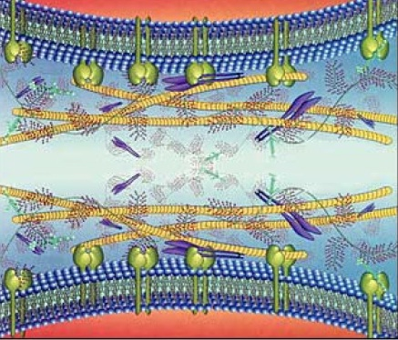 | |
{kind=link}
{kind=link}
{kind=link}
{kind=link}
{kind=link}
{kind=link}
{kind=link}
{kind=link}
{kind=link}
{kind=link}
{kind=link}
{kind=link}
{kind=link}
{kind=link}
{kind=link}
{kind=link}
{kind=link}
{kind=link}
{kind=link}
{kind=link}
{kind=link}
{kind=link}